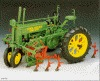
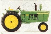
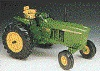
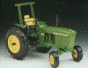
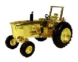

| 100 year tractor anniversary Only 2018 produced #LP68805 2018 1/16 scale |
 |
Waterloo Boy Celebrating 100 years of John Deere tractor production |
|
| #5 Precision Elite #64435 2017 1/16 scale |
 |
John Deere 4320 Fifth release in the Precision Elite Series |
|
| Special Edition 25th Precision Anniversary Only 1000 made!! 2016 1/16 scale |
 |
John Deere 7800 MFWD Gold Chrome plated Special Edition celebrating the 25th anniversary of the Ertl Precision line |
|
| #4 Precision Elite #45507 2015 1/16 scale |
 |
John Deere 7800 MFWD Fourth release in the Precision Elite Series |
|
| #3 Precision Elite #45464 2014 1/16 scale |
 |
John Deere Model 4840 Third release in the Precision Elite Series |
|
| #2 Precision Elite #45358 2013 1/16 scale |
 |
John Deere Model 6030 Second release in the Precision Elite Series |
|
| #1 Precision Elite #45289 2011 1/16 scale |
 |
John Deere Model 4450 First release in the Precision Elite Series |
|
| #10 Precision Key #45238 2010 1/16 scale |
 |
John Deere Model 4960 w/ FWA in 1/16th scale Precision Key Series #10 in the Precision Key Series |
|
| #9 Precision Key #45177 2010 1/16 scale |
 |
John Deere Model 2510 Precision Key Series #9 in the Precision Key Series |
|
| #8 Precision Key #45106 2009 1/16 scale |
 |
John Deere Model R Precision Key Series #8 in the Precision Key Series |
|
| #7 Precision Key #15906 2009 1/16 scale |
 |
7020 4WD #7 in the Precision Key Series 7020 Articulated 4WD 1/16 scale! |
|
| #6 Precision Key #15953 2008 1/16 scale |
 |
4020 Wheatland #6 in the Precision Key Series 4020 standard |
|
| #5 Precision Key #15904 2008 1/16 scale |
 |
John Deere 620 Hi Crop Fifth in the Precision Key Series |
|
| #4 Precision Key #15851 2007 1/16 scale |
 |
John Deere Model 420 w/ disk Fourth in the Precision Key Series |
|
| #3 Precision Key #15306 2006 1/16 scale |
 |
John Deere Model 3020 with 48 loader Third in the Precision Key Series |
|
| #2 Precision Key #15307 2005 1/16 scale |
 |
Model G Precision Key Second in the Precision Key series |
|
| #1 Precision Key #15677 2005 1/16 scale |
 |
4430 Precision Key Series | |
| #15946 2008 1/16 scale |
 |
Unstyled Model D First in the Heritage Edition Precisions |
|
| #15168 2008 1/16 scale |
 |
4010 Row Crop The second release of the Heritage Series Precisions |
| No 1 #560 1990 1/16 scale |
 |
Unstyled Model A on Steel Wheels | |
| No 2 #5633 1991 1/16 scale |
 | Unstyled A with Cultivator | |
| No 3 #5638 1992 1/16 scale |
 | Model 4020 Narrow Front | |
| No 4 #5549 1993 1/16 scale |
 | Model 4020 Powershift Wide Front | |
| No 5 #5684 1994 1/16 scale |
 | Model 4000 with Roll Bar | |
| No 6 #5763 1994 1/16 scale |
 |
F145H 5 Bottom Plow | |
| No 7 #5788 1995 1/16 scale |
 |
Model 70 Row Crop Diesel | |
| No 8 #5259 1995 1/32 scale |
 |
Model 8400 (1/32 scale) There were 2 versions of the 8400. The 1995 version had the dark horizontal lines on the hood decal as opposed to the 1996 version that had shadowed lettering on the decal. |
|
| No 9 #5838 1996 1/16 scale |
 |
494A 4 Row Planter | |
| No 10 #5832 1996 1/16 scale |
 |
Model 720 Diesel Wide Front | |
| No 11 #5770 1997 1/16 scale |
 |
Model 214T Baler | |
| No 12 #5107 1998 1/16 scale |
 |
Styled Model B Tractor | |
| No 13 #5766 1998 1/16 scale |
 |
Model 730 Diesel Tractor | |
| No 14 #5083 1999 1/16 scale |
 |
Model 4020 with 237 Corn Picker | |
| No 15 #15013 2000 1/16 scale |
 |
Waterloo Boy Tractor | |
| No 16 #15133 2000 1/16 scale |
 |
Barge Wagon | |
| No 17 #15077 2000 1/16 scale |
 |
4440 Tractor | |
| No 18 #15165 2001 1/16 scale |
 |
720 with Loader and Rear Blade | |
| No 19 #15134 2001 1/16 scale |
 |
Hay Wagon | |
| No 20 #15210 2001 1/16 scale |
 |
Model 3010 Gas Tractor | |
| No 21 #15364 2002 1/16 scale |
 |
Model 630 Tractor | |
| No 22 #15365 2002 1/16 scale |
 |
Model 8020 Articulated Four Wheel Drive Tractor | |
| No 23 #15366 2003 1/16 scale |
 |
Model 70 Standard Tractor | |
| No 24 #15487 2004 1/16 scale |
 |
Unstyled Model B | |
| No 25 #15608 2004 1/16 scale |
 |
Model 5010 Tractor |
| #15881 2006 1/16 scale |
 |
40th Anniversary 5020 | |
| #15213 2001 1/16 scale |
 |
John Deere Model 110 Garden Tractor With Wagon - 1st of lawn and garden tractor series | |
| #LGSET1 2004 1/16 scale |
 |
Set of 4 colored lawn and garden tractors and equipment | |
| #15511 2005 1/16 scale |
 |
Model 140 w/ equipment - 2nd of the lawn and garden line of precisions | |
| #15036 2000 1/32 scale |
 |
John Deere 9750 STS Combine - First release in the Precision II series | |
| #15286 2002 1/32 scale |
 |
John Deere 9420T - Second release in Precision II series | |
| #15305 2006 1/32 scale |
 |
1/32 scale John Deere 8530 - Third Precision II release | |
| #15905 2008 1/32 scale |
 |
#4 in the Precision II Series 8430 w/ front and rear duals 1/32 scale |
|
| #15410 2002 1/16 scale |
 |
John Deere 650H Dozer 1st in the construction line of precisions | |
| #15774 2006 1/16 scale |
 |
#2 in the construction line - 544J wheel loader | |
| #45086 2009 1/16 scale |
 |
John Deere 650J Dozer #3 in the construction line |
|
| #15427 2002 1/16 scale |
 |
630 High Crop - Collectors Center - 1st release |
|
| #15512 2003 1/16 scale |
 |
BWH - Collectors Center - 2nd release | |
| #15582 2004 1/16 scale |
 |
Model G Hi Crop - Collectors Center - 3rd release | |
| #15138 2005 1/16 scale |
 |
Model 40T Wide front with plow - Collectors Center - 4th release | |
| #15819 2006 1/16 scale |
 |
Model 620 LP - Collectors Center - 5th release | |
| 15752 |  | Special Edition Gold 4020 Deere 200th Birthday 1 OF ONLY 500 MADE! |